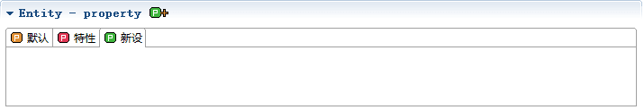
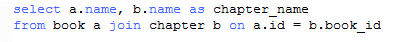
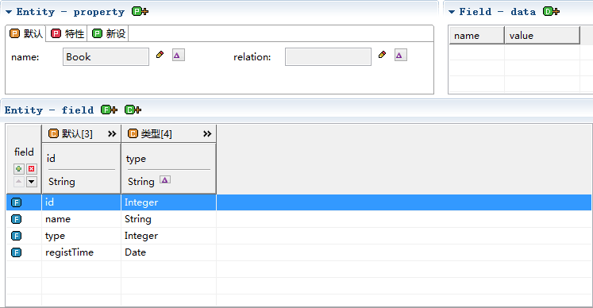
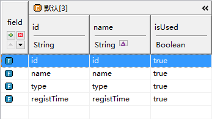

entity模型包含了2种类型数据库和Java类。
数据库中有张表book，id是主键，包括name，type，regist_time等字段。
转换成模型后的结构如下（如何转换模型请阅读：模型转换）
新设是用户自己定义属性的地方，可以在此定义额外的属性。

我们可在此新设修改属性，或者在预设中设置属性，更详细的内容，请阅读：property - 属性。
默认
我们可以新设修改属性，其中name可以通过转换和预设得到新的值，更详细的内容请阅读：field - 字段。
类型：type和fullType用作语言的类型和完整类型，jdbcType和dbType为数据库类型的映射。
我们可以新设修改属性，其中type和fullType以jdbcType为原型，通过转换和预设得到新的值，更详细的内容，请阅读：field - 字段。
关于jdbcType：
不同数据库所支持的SQL类型之间有很大的不同，比如Oracle中有DECIMAL类型， Mysql中则没有，Mysql的varchar类型对应到Oracle却是varchar2。类似的， 大部分数据库都有自己的类型规则。 幸运的是，各大数据库厂商都为自家的数据库提供了jdbc驱动包，它会按照jdbc标准， 把自己的SQL类型转换成对应的jdbc类型，而这些jdbc类型都来自java.sql.Types中。 以下是所有的类型： ARRAY, BIGINT, BINARY, BIT, BLOB, BOOLEAN, CHAR, CLOB, DATALINK, DATE, DECIMAL, DISTINCT, DOUBLE, FLOAT, INTEGER, JAVA_OBJECT, LONGNVARCHAR, LONGVARBINARY, LONGVARCHAR, NCHAR, NCLOB, NULL, NUMERIC, NVARCHAR, OTHER, REAL, REF, ROWID, SMALLINT, SQLXML, STRUCT, TIME, TIMESTAMP, TINYINT, VARBINARY, VARCHAR
数据库：数据库表和视图所包含的一些固有属性。
book表除了自己本身，还有一张从表chapter，它的book_id是外键，关联的是book表的id。
book表的字段id、name、type、regist_time，id是主键，所以isPk为true。
chapter表的字段id、name、book_id，主键是id，所以isPk为true，book_id是外键，所以isFk为true，外键对应的主表fkEntityName为book，对应的字段fkFieldName为id。
除了id、name、type这些固定的列，用户还可以根据自己的需要新加列。新设列相当于给每个字段都添加了新的属性，在具体的业务需求中，我们还需要加入一些列来完善我们的模型。
比如在界面中，我们需要新设fieldName、controlType、isQuery三个列。
关于新设和修改Column，更详细的内容，请阅读：column - 列。
字段除了Column这样的公共属性外，每个字段自己还有私有的属性，它就是data。在data中，我们可以设定多个键值。
选中任何字段后，都可以设置它的data。
选中后可以设置字段的私有属性。
类型字段是一个下拉框select，select的option有2项，novel和magazine，value为0和1。
关于新设和修改Data，更详细的内容，请阅读：data - 字段数据。
数据库中有张视图vw_book_chapter，它是book表和chapter的关联查询，查询的结果是2个字段 name和chapter_name。

转换成模型后的结构如下（如何转换模型请阅读：模型转换）， 我们可以看到视图模型和数据库模型不同的一点在于，视图模型的Field中没有表的部分。
为什么没有表这个部分呢，很好理解，因为视图和表不同，它没有isPk（主键）、isFk（外键）、fkEntityName(外键对应的主表)、fkFieldName（外键对应的主表字段）。
视图模型其它部分的内容同表模型，请参考表模型。
此类有4个属性id、name、type、registTime，还有默认构造方法，带参数构造方法和所有属性的get/set方法。
从Java类转换而来，转换成模型后的结构如下（如何转换模型请阅读：模型转换）

新设是用户自己定义属性的地方，可以在此定义额外的属性。
我们可在此新设修改属性，更详细的内容请阅读：property - 属性。
默认

我们可以新设修改属性，其中name可以通过转换和预设得到新的值，更详细的内容，请阅读：field - 字段。
类型：type和fullType用作语言的类型和完整类型，jdbcType和dbType为数据库类型的映射。
我们可以新设修改属性，其中type和fullType以jdbcType为原型，通过转换和预设得到新的值，更详细的内容，请阅读：field - 字段。
区别于数据库模型，java类模的字段只有默认和类型2个部分。
<entity>有2个属性
var新设变量名object，这个object将指向这个entity模型。
运行结果
<entity>标签需要和其他标签配合使用：
更具体的使用方法，请阅读以下实战模板中的<entity>标签。